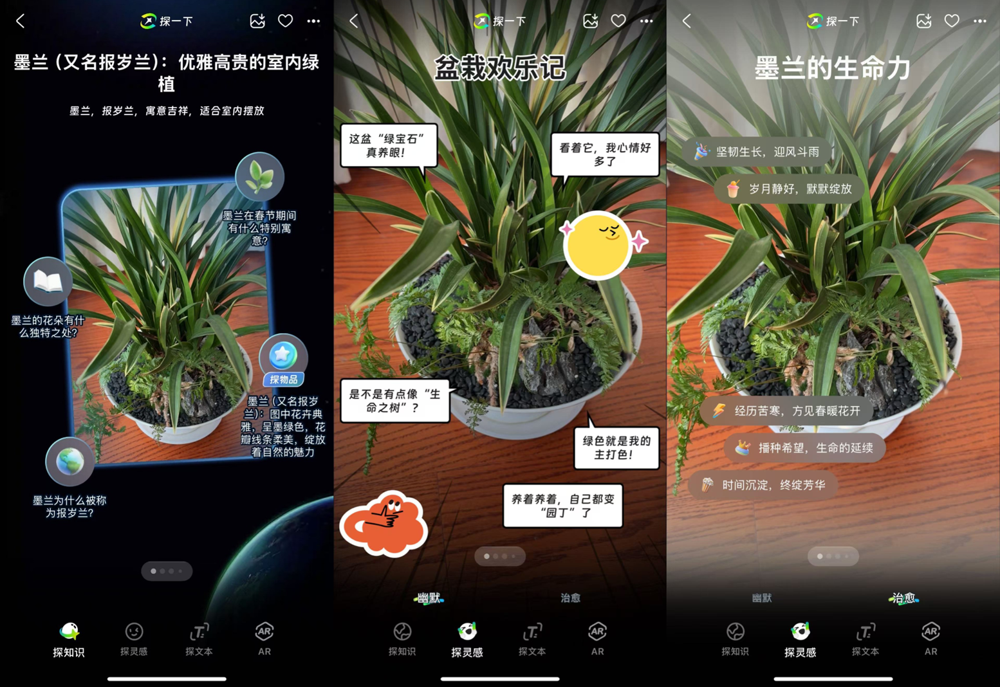
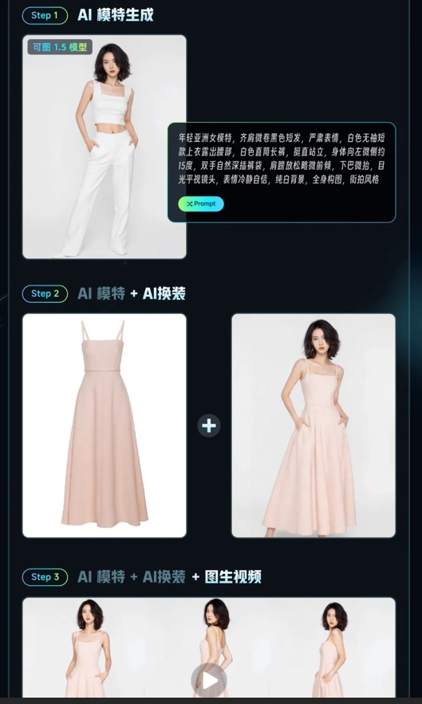

2、AI应用——支付宝推出新一代AI视觉搜索产品，富有趣味性的随身AI陪伴
2024年12月30日，支付宝宣布推出新一代AI视觉搜索产品**「探一下」**，基于自研多模态大模型技术，可“用AI之眼探索万物”，为**花草动物潮玩、旅游随身讲解、商品药品**等提供更快速、有用、趣味的生成式搜索服务。
功能划分上，分为四个选项：“探知识”、“探灵感”、“探文字”、“AR”。通过手机摄像头，探知识提供对捕捉画面的识别和描述，**搭配知识解说**，并且还可以**根据画面特征关联商品信息**，类似于结合了**拍图搜物**的能力。

探灵感类似于看图配文，提供“幽默”和“治愈”两种文本生成风格，前者以漫画对话气泡展现，类似于展现物品视角的内心活动，“治愈”就是正能量文本输出，生成的文本内容都是基于AI对画面内容识别之后延伸出来的答案，把视觉识别与AI帮写结合在了一起。探灵感在小红书上成为用户讨论最多的一个功能。
4、AI应用——快手可灵AI上线可图1.5图像模型和AI模特功能
12月27日，快手可灵AI宣布正式上线全新的可图1.5图像模型，以及由该模型打造的AI模特功能。AI模特功能是指借助可图1.5图像模型，用户只需**输入文本描述**即可**生成符合需求的AI模特**和原有的AI换衣功能搭配进行服装搭配，并且还可以通过图生视频功能生成自然、真实的动态服装展示视频。AI模特支持用户自定义个性化特征，例如性别、年龄和肤色等，同时还提供了快捷的模特设置选项和“推荐尝试”词条，以帮助用户一键生成高质量的模特图像。
原文链接：可图 1.5 图像模型来啦！全新「AI模特」功能上线～

5、[DeepSeek V3](https://www.deepseek.com/)是知名私募巨头幻方量化旗下人工智能公司深度求索(DeepSeek)开源的最新版大模型。与上一代相比，其参数规模从2360亿大幅提升至6710亿，并在14.8T tokens的数据集上进行了预训练，上下文长度更是达到了128K。这一系列的升级，使得DeepSeek-V3在多个主流评测基准上表现出色，性能媲美甚至超越了GPT-4o和Claude-3.5-Sonnet等领先的闭源模型。值得注意的是，该模型仅使用了2000多张GPU，训练成本不到600万美元，远低于OpenAI、meta等在万卡规模上训练的模型成本。
论文：[[2412.19437\] DeepSeek-V3 Technical Report](https://arxiv.org/abs/2412.19437)
简要解读：[DeepSeek-V3 是怎么训练的｜深度拆解 | BestBlogs](https://www.bestblogs.dev/article/b158e5)
模型：[DeepSeek-V3 - a deepseek-ai Collection](https://huggingface.co/collections/deepseek-ai/deepseek-v3-676bc4546fb4876383c4208b)